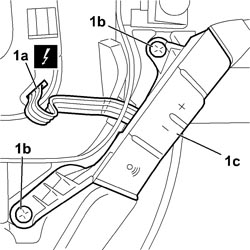

5580P66 <x>MODULE (ONE) ON STEERING WHEEL CONTROLLING CONNECT PANEL FUNCTIONS - R&R </x>
- Path
- Procedures > 55 ELECTRICAL EQUIPMENT > 5580 SPECIAL ACCESSORIES > 5580P CONNECT PANEL > 5580P66 <x>MODULE (ONE) ON STEERING WHEEL CONTROLLING CONNECT PANEL FUNCTIONS - R&R </x>
- Kind
- repair procedure (removal / refitting; the operation number is the code)
- Applies to
- all engines; all production periods
- Interactive page
- https://sloeber94.github.io/elrnDB-fCrm/en/#/194000826
Applies to: all engines; all production periods
- Turn the ignition key to the OFF position and extract it.
- Disconnect the negative and positive battery terminals and insulate them.
- Wait for 10 minutes before continuing.
Description | Connector | |
|---|---|---|
BATTERY |
Applies to: all engines; all production periods
 Removing
Removing
 Refitting
RefittingOp. 5580C18 AIR BAG MODULE - R+R
1. Disconnect the electrical connector (1a), undo the fixing bolts (1b) and remove the Connect panel function control module (1c) from the steering wheel.

Applies to: all engines; all production periods
Refitting
Removing- Position the Connect panel function control module on the steering wheel.
- Tighten the Connect panel function control module bolts.
- Connect the electrical connection.
Op. 5580C18 AIR BAG MODULE - R+R
- Connect the negative and positive battery terminals.
Description | Connector | |
|---|---|---|
BATTERY |